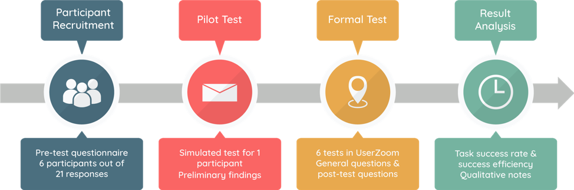
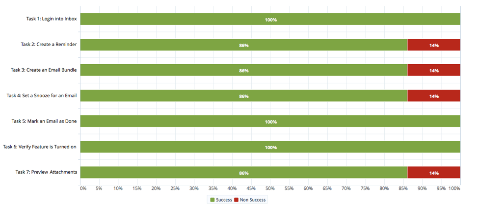

Usability Study of Inbox by Gmail
- Duration: Spring 2018 - Individual Project
- Course: Advanced Usability Testing
- Tools and Methods: User Research, Participant Recruitment, Pilot Testing, Usability Testing, Result Analysis, UserZoom
For our Usability Study project, we chose to study and test the “Inbox by Gmail” web application. Inbox by Gmail is an email service developed by the Gmail team at Google. During its launch, Inbox was described to be “minimalist and lovely, full of layers and easy to navigate.”
Overview
Our Team conducted on-site usability tests at the University of Maryland, College Park, from April 27th to May 5th. The purpose of these tests was to assess the usability of the web interface design and its unique features. This usability study revealed information about what the experience is like for first time users and in what ways Inbox contributes to the increase or decrease in the efficiency of achieving their goals.
Research Questions
Our plan was to understand and reveal the answers to the following questions through this usability study:
- Does Inbox have superior usability compared to Gmail? Why did Google launch another email service/client application?
- What are the usability features and issues of Inbox by Gmail?
- If Inbox has better features than Gmail, why is it not widely known? Why is Gmail still preferred as the primary email service by most people?
Methodology
Sessions
Our team conducted and recruited participants by sending out emails to friends and fellow classmates. We recruited 6 participants out of 21 responses that we received from the pre-test questionnaire. The pre-test questionnaire was developed using Typeform and the form’s link was distributed through emails for potential participants to fill out. For this study, we wanted to recruit people who have been using Gmail and have not used Inbox by Gmail before (first time users of Inbox). We also wanted to restrict the participants to University of Maryland students between the ages of 18 and 35 so that it will help us understand this particular user group in depth and analyze their usability statistics. The pre-test questionnaire helped us collect valuable information like the number of email accounts they hold, the primary email services they use, their proficiency level in using Gmail, and the purposes for which they use Gmail.
Participants
Our team conducted 7 usability tests in total - 1 pilot test at the beginning of the study, and 6 tests with 6 participants. As mentioned above, we conducted the usability study with male and female University of Maryland students between the ages of 18 and 35 years old, from a diverse set of backgrounds and programs of study. All of these participants were Gmail users for at least 1 year for different purposes including social, personal, and professional/business purposes, and were first time Inbox by Gmail users.
Evaluation Tasks and Scenarios
The tasks and scenarios were created with the intent to cover all of Inbox’s major functions and also to assess how easy or difficult it was to find certain critical information related to using the application. To conduct the usability study of Inbox, we created a dummy account and filled it with emails from the team and promotions from various neutral websites and services.
The participants were asked to perform the following tasks with Inbox:
- Log into Inbox by Gmail.
- Create a reminder to respond to an email the next morning.
- Create a bundle to add emails from a particular sender to the bundle.
- Set a snooze to view the email at a later time.
- Mark an email as done and move it to the ‘Done’ folder.
- Verify that the ‘Suggest emails to reply to’ is turned on.
- Preview attachments from the main email screen.
Task Success Rates
All of our participants were able to finish task 1 (log in to Inbox), task 5 (mark email as done) and, task 6 (verify feature is turned on) successfully, while task 2 (create a reminder), task 3 (create an email bundle), task 4 (set a snooze for an email) and, task 7 (preview attachments) all have a success rate of 86%, which means that 1 participant failed in each of the tasks.
Task Success Efficiency
For the task success efficiency, we tracked the average time spent on each task and the number of clicks they took since they are important metrics to measure the efficiency of the task completion.
As shown in the graphs, task 2 (create a reminder) amounted to significantly longer completion time and clicks to finish. In addition, from the graph we can learn that the maximum completion time for task 2 is 7 minutes 41 seconds and the maximum clicks for task 2 is 100.
Moreover, we can see that task 3 (create a email bundle) also amounted to longer time and clicks, while task 4 (set a snooze for an email), task 5 (mark email as done), and task 6 (verify a feature is turned on) seem to take less time and fewer clicks than other tasks.
Participant's reaction to Inbox
The icons on the right are too small for me to recognize. ” - Participant 1
“I have never used the ‘bundle’ before and I wonder what it is.” - Participant 2
“What is the actual advantage of Inbox (compared to Gmail)? What are Inbox’s unique functions?” - Participant 3
"I would use inbox if I had more time to experience all of the features that it had to offer. Gmail can be a little messy at times and this software could help to organize things a little bit better" - Participant 4
"Inbox is a pretty interesting upgrade/sidegrade from gmail that introduces features that I didn’t know I’d like/needed but I’m interested in exploring them further." - Participant 5
"Could include links to sorting emails and other settings n (in) the mail page. Sender image/ icons in the inbox was too disturbing." - Participant 6
Usability Issues and Recommendations
Below are the usability issues that we found from our study -
- Lack of clarification between "create a reminder" and "snooze."
- Lack of clarification for what the compose button on the bottom right of Inbox does.
- Users unable to create a reminder in the “Reminders” folder.
- Users unable to snooze an email in the “Snooze” folder.
- Users unable to add all past emails from the same user to a bundle.
- Location of create bundle is not apparent.
Conclusion
The majority of users had a positive response to using Inbox by Gmail. Most participants also found certain features of Inbox similar to features from Google and/or Gmail. For example, most users did not have trouble logging in or finding the settings as these are consistent throughout other Google applications. However, new features such as creating and using email bundles, and creating reminders posed a challenge for some users as some struggled to perform certain tasks. Additionally, the location of features such as snooze and reminders created some issues for participants because some participants expected these features to be included in “Snooze” and “Reminder” folders on the left-side menu.
Regarding our initial research questions, we concluded that:
- Inbox by Gmail does not have superior usability compared to Gmail. Both current UI’s are based on Google’s Material Design and share many design similarities.
- Google launched Inbox as a separate product with the goal of increasing “productivity and organization.”
- Inbox presents to users a set of unique new features such as bundles, snoozing, and reminders. While some of these features were familiar and/or intuitive to most users, others posed a challenge to some users which we defined as the usability issues.
- After trying Inbox, the vast majority of our users said they would still prefer using Gmail. We suspect this is due to the familiarity people have with the regular Gmail client as well as its features. Gmail was launched 14 years ago in April 2004.